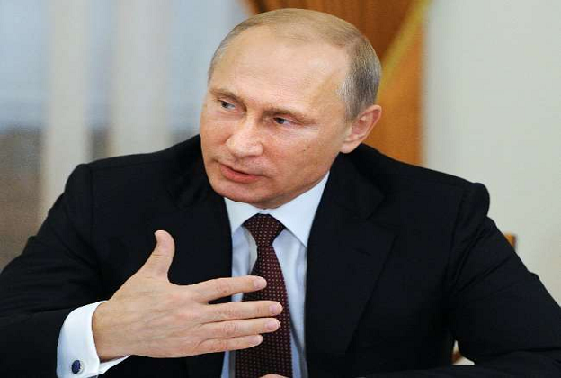

CURRENT-AFFAIRS FEB 2, 2022
1. Putin's warning: Russian President said - America is provoking war, Ukraine's joining NATO is a threat to the world

Russian President Vladimir Putin has reacted to the Ukraine crisis for the first time this year. Putin said on Tuesday that the US was his to get Russia to start a war with Ukraine. He wants to rein in the progress of Russia. It is looking for an excuse to impose economic sanctions and is using Ukraine to achieve this goal.
Putin said on Tuesday – if Ukraine is included in NATO, it will prove to be dangerous not only for Russia but for the whole world. Ukraine can use NATO military technology and weapons to take back Crimea. Which could lead to a war between Russia and the NATO bloc.
America wants to impose tough sanctions on Russia
Putin holds a press conference with Hungarian Prime Minister Viktor Orban in Moscow. He said- Different methods can be used to ban us. Like first engaging us in some conflict and then forcing our allies in Europe to impose strict sanctions on us.
At present, discussions are going on in America on this. If we look deeply at all these questions, it is clear that this will lead to a negative development. We want to avoid this.
The interest of all countries should be taken care of
According to Russia, a way to solve this problem should be found keeping in mind the interests of all countries. The US and NATO last week gave written responses to Russia's demands. To this, Putin said that in this also the main concerns of Russia were ignored. Let us tell you that Russia annexed Crimea from Ukraine in 2014 through military action.
2. Pfizer and BioNTech seek emergency use approval to vaccinate children up to five years
New York, ANI. Amidst the growing threat of corona, pharmaceutical companies, Pfizer and BioNtech have called for emergency use of their corona vaccine for children between the age of 6 months to 4 years. Both pharmaceutical companies said that Pfizer Inc. and BioNTech SE announced today that following a request from the US Food and Drug Administration (FDA), the companies have submitted changes to the emergency use authorization (EUA) of the Pfizer-BioNTech COVID-19 vaccine. A rolling submission is initiated.
Pfizer and BioNTech said that for children 6 months to 4 years of age (6 months to 5 years of age) in this population for urgent public health needs, the Pfizer-BioNTech vaccine is allowed for 5 years. It will be the first corona vaccine available for children under the age of 1. Pfizer and BioNTech said they expected the completion of EUA submissions in the coming days.
Pfizer's President and CEO, Albert Boerla, said the number of hospitalizations of children under the age of 5 due to the coronavirus has increased. Our mutual goal with the FDA is to develop vaccines for a variety of future variants and provide an option for parents to help protect children from the virus.
He said that we believe that three doses of vaccine will be needed for children 6 months to 4 years of age to fight against current and possible future variants of corona. If two doses are allowed, the parent will have the opportunity to start the vaccination while waiting for the third dose.
3. Russia offers talks with western countries, Ukraine announces to increase military strength
Moscow, ap. Russian President Vladimir Putin said on Tuesday that the US and its allies have ignored Moscow's top security demands, but his country remains ready for talks with the West on Ukraine. On the other hand, Ukrainian President Volodymyr Zelensky has signed a decision, under which the country's military capacity will be increased to one lakh in the next three years and the salary of soldiers will also be increased. Zelensky clarified that the decision does not at all mean that a war with Russia is imminent.
Putin said it was in the interest of all parties, including Russia, to de-escalate tensions over the Ukraine issue. He denounced the West for not considering Russia's demands not to include Ukraine in NATO. Addressing lawmakers, Ukrainian President Zelensky said that instead of taking tension, they should remain calm and united and not try to take political advantage of the ongoing tension with Russia, according to Reuters. Ukraine currently has 25,000 soldiers, while Russia has much more troops and state-of-the-art equipment.
Russia calls claim of response to US proposal 'false'
According to the AP, three Biden administration officials have claimed that the Russian government sent a written response to the US proposal aimed at mitigating the Ukraine crisis. The Biden administration is pressuring Russia to de-escalate tensions along the Ukraine border. However, Russian Deputy Foreign Minister Grushko Alexander called the claims "false" in an interview with state news agency RIA Novosti on Tuesday.
Dispute between representatives of Russia and America at UNSC
Russia accused the West of escalating tensions over Ukraine and said the US brought "Nazis" to power in Kiev. Russia made this remark on Monday at a meeting of the United Nations Security Council (UNSC), where representatives of the two countries had a heated argument.
Russian Ambassador Vasily Nebenzia accused the administration of US President Joe Biden of inciting and inciting tensions. Looking at the US ambassador, Nebenzia said, 'You are pushing towards war. Do you want this to happen?' US Ambassador Linda Thomas Greenfield hit back, saying Russia had deployed more than 100,000 troops to the Ukraine border, the largest military gathering in Europe in decades.
According to ANI, Kremlin press secretary Dmitry Peskov has alleged that the US is promoting hysteria on the issue of Ukraine. Hysteria is a mental state associated with emotions. The Russian press secretary was reacting to US President Joe Biden's statement that Russia would face dire consequences if it attacked Ukraine instead of a diplomatic solution.
Russia thanks India for abstaining from voting
Russia's First Deputy Permanent Representative to the United Nations, Dmitry Polinsky, thanked the four countries for voting against China's procedural vote ahead of the UNSC meeting on the situation in Ukraine and the absence of India, Kenya and Gaban. Polinski wrote on Twitter in response to a tweet by US Ambassador Linda Thomas Greenfield, "As expected, this was nothing more than a public relations gimmick. This is an example of megaphone diplomacy (the diplomacy of making a public statement in a disputed matter rather than through direct dialogue). No truth, only allegations and baseless claims. Polinski said, 'This is the worst level of American diplomacy. Thanks to our four allies, China, India, Gaban and Kenya, who stood firm despite US pressure ahead of the vote. 10 other members, including France, America and Britain, voted in favor of the meeting. In the meeting, India underlined that calm and constructive diplomacy is the need of the hour and in the larger interest of international peace and security, all sides should refrain from any steps that may escalate tensions.
4. Omicron increased cases of Kovid in next 10 weeks: Tredos
GENEVA, AP. World Health Organization (WHO) chief Tredos Adhanam Ghebreyesus has said that since the Omicron variant appeared 10 weeks ago, there have been an increase of 90 million cases of Kovid. These cases are more than the total cases of Kovid found in 2020. Tredos said that many countries have relaxed Corona restrictions. He cautioned that Omicron should not be taken lightly. He said that even though Omicron causes less severe disease than the earlier variant of Corona, it has caused more deaths in some areas.
Speaking at the WHO's regular press conference, Tredos said there has been a perception in some countries that Omicron is highly contagious and less serious, so it is not possible or needed to prevent its spread for a long time. He said that this assumption is wrong. This virus is dangerous and it keeps on developing in front of our eyes.
Tedros Adhanam Ghebreyesus, Director General of the World Health Organization (WHO) has again warned about the Omicron variant. He has said that at present the world is not getting rid of the corona epidemic and it is also dangerous to mistake Omicron as a mild disease. WHO chief said that Omicron may be less severe than other variants of corona, but the concept of treating it as a mild disease
5. Russia thanked these countries, including India, for being absent from voting on Ukraine, said - did not bow down to American pressure
United Nations, PTI. Russia has thanked India, Kenya and Gaban for absenting India, Kenya and Gaban in the procedural voting ahead of the meeting on Ukraine's situation in the United Nations Security Council (UNSC) and China for voting against it. A Russian diplomat at the United Nations thanked the four countries for not succumbing to "US pressure". Significantly, India did not participate in the procedural voting in the United Nations Security Council (UNSC) ahead of the meeting to discuss the "tense situation" along the Ukraine border.
Russia's first Deputy Permanent Representative to the United Nations, Dmitry Palinsky, responded in a tweet on Monday to US Ambassador to the United Nations Linda Thomas Greenfield's tweet, saying, "As we expected it was nothing but a PR stunt." This was an example of 'megaphone diplomacy'. There was no fact in it, only allegations and baseless claims. American diplomacy is at its worst. Thank you to our 4 allies China, India, Gaban and Kenya, who did not succumb to US pressure before voting.
Thomas Greenfield said, "Russian aggression not only threatens Ukraine and Europe, but the UN Security Council has an obligation to hold it accountable." What would it mean for the world if former empires were annexed by force? This will lead us down a dangerous path. The reason for bringing these issues to the UNSC is to stop the crisis before it strikes. Russia's goodwill is tested. Will they hold talks and stay on it till we reach an agreement? If they refuse to do so, the world will know why and who is responsible for it.
6. Check payment system has changed! Know otherwise your check will be returned
New Delhi: If you are a customer of Bank of Baroda, then there is news of work for you. The bank has changed some of its big rules. The bank has implemented a new rule from yesterday i.e. February 1. If you do not know about this new rule of the bank, then you may have trouble in working.
Changes in check clearance system
Bank of Baroda's rules related to Check Clearance (Positive Pay Confirmation) have changed. According to the information given by the bank, confirmation has now become mandatory for check payment from February 1. If the check is not confirmed, then that check can also be returned. However, these rules will be applicable to checks of an amount of 10 lakhs or more.
Bank appeals to customers
The bank has appealed to its customers, 'You should take advantage of the facility of positive pay for CTS clearing. The bank has done this rule to avoid fraud in checks. The bank has said to protect yourself from fraud by re-verifying the details through various channels.
Along with this, Bank of Baroda has also provided the facility of virtual mobile number 8422009988 for the customers for positive pay confirmation. According to this new rule, after writing CPPS, confirmation will be made on sending it to 8422009988 with account number, check number, check date, check account, transaction code, name of the payee. Apart from this, the customer can call on the toll free number 1800 258 4455 and 1800 102 4455.
What is Positive Pay System?
Positive Pay System is to provide protection against fraud in clearing of checks under check truncation system. Check Truncation System is a process of clearing cheques. This makes the process of collection of checks faster. National Payment Corporation of India (NPCI) is providing positive pay facility in Check Truncation System (CTS) to banks. This system will be applicable on payment through check of 50 thousand or more amount.
How does Positive Pay System work?
Through this system, check information can be given through SMS, mobile app, internet banking and ATM. These details will be re-verified before making payment of the cheque. If any discrepancy is found in it, the bank will reject the check. Here if there is a case of two banks i.e. the bank whose check has been deducted and the bank in which the check has been inserted, then both will be informed about this.
7. Donald Trump's supporter wore such a mask, the flight's crew member forcibly wore another mask
New Delhi: A supporter of former US President Donald Trump claims he was forced to remove an electronic face mask containing the anti-president Joe Biden phrase 'Let's go Brandon' on a Spirit Airlines flight.
Told the whole incident by posting a Tiktok video
Trump fan Adam Radogna posted a TikTok video of himself during a flight from Cleveland to Tampa on Friday, in which he was given a second mask to replace the one he was wearing, reports Metro.
Told anti-president Joe Biden's mask objectionable
When Radogna asked a spirited flight attendant why she had to swap masks, she could be heard saying, 'It's offensive ... it can happen to some people, so we go back and forth' Not going. Go ahead and put on the blue mask, okay?'
A plain mask had to be applied on the electronic mask
Radogna puts a blue mask on his electronic mask and says that this is no longer America. Although the same thing was written on his shirt but it was not changed. Radogna's sweater also had the slogan printed on the picture of Biden's face.
8. Ukraine Crisis: Why Russia praised India-China? Said- America stood firm even after pressure
Russia-Ukraine Crisis: Russia has thanked India, China, Kenya and Gabon for their support in the meeting held to discuss the situation in Ukraine in the United Nations Security Council (UNSC). A Russian diplomat posted in the United Nations thanked the four countries for "standing up against US pressure".
1 lakh Russian soldiers are frozen on the Ukraine border
Let us tell you that thousands of Russian soldiers have been surrounded for the last 2 months near the borders of Ukraine. The United Nations Security Council held an important meeting on Monday on the request of America to discuss this issue. The council needed nine votes for this meeting. Russia and China voted against the meeting, while India, Gabon and Kenya did not participate. At the same time, 10 other members of the council, including France, America and Britain, voted in favor of running the meeting.
In the meeting, India stressed that calm and constructive diplomacy is the need of the hour to resolve the Ukraine crisis. Therefore, in the larger interest of international peace and security, either side should refrain from escalating tensions.
'Public relations gimmick was the method'
After this meeting, Russia's First Deputy Permanent Representative to the United Nations, Dmitry Polinsky, responded by tweeting on Monday. Polinski wrote on Twitter, 'As we expected, this was nothing more than a public relations gimmick. This is an example of 'megaphone diplomacy' (the diplomacy of making a public statement in a disputed matter instead of talking directly). No truth, only allegations and baseless claims.
'Thanks to countries like India-China'
Polinski said, 'This is the worst level of American diplomacy. Thanks to our four allies, China, India, Gabon and Kenya, who persevered despite US pressure ahead of the vote.
Earlier, US Ambassador to the United Nations Linda Thomas-Greenfield tweeted, "Russia's aggression is not only a threat to Ukraine and Europe, but it is also a threat to the international order." It is the responsibility of the United Nations Security Council to make it accountable. What would this mean for the world if former empires were granted a license to begin reclaiming their territories by force? This will take us down a dangerous path.
9. Another weapon found against Corona, Moderna's full use of Spikewax approved in the US
Washington: Moderna's Spikevax Vaccine has got full approval in the US. The US Food and Drug Administration said on Monday that Spikewax has been given full approval. Earlier this vaccine was approved only for emergency use in America. The FDA says that the vaccine has met the standards of quality and safety.
'Vaccine meets all standards'
According to news published in our affiliate website WION, FDA's Executive Commissioner Janet Woodcock said in a statement that people can rest assured that Spikevax has the necessary safety for any vaccine approved for use in the US, Meets FDA's high standards for effectiveness and quality.
Only these people will get the vaccine
Woodcock further said that the FDA's approval of Spikevax is an important step in the fight against the corona epidemic. This will help in preventing the spread of infection. Moderna: This vaccine will be administered only to people of 18 years or above. The Pfizer vaccine for individuals 16 years of age or older was approved by the FDA in late August.
Trial was done on 14, 287 people
The FDA's executive commissioner expressed hope that the approval given to Moderna Vaccines could instill additional confidence among people in making the decision to vaccinate. At the same time, Moderna CEO Stephen Bansel called this move of FDA a milestone for the company. Significantly, the emergency use of Moderna Vaccine was approved in December 2020. In the clinical trial of Spikewax, 14,287 people were included.
9. Be careful with all these variants of Omicron, shocking revelation in the study
Copenhagen: The whole world has been battling the corona virus infection for the last 2 years. When it seems that the virus is about to end, then a new variant of the virus is exposed. Although the new variant of Corona, Omicron, could not cause much havoc, but a shocking revelation has been made about its sub-variant BA.2. A study conducted in Denmark found that BA.2 is more transferable than Omicron.
Spreads 33 percent faster BA.2
The study was carried out by a team led by scientists affiliated with the University of Copenhagen and the Danish Ministry of Health, in collaboration with other institutions. The study found that the new sub-variant of Omicron spreads 33 percent faster than BA.1. This new variant was rapidly spread to others by people infected with BA.2 in Denmark. However, the study has not yet been submitted for review.
Spreads 33 percent faster BA.2
The researchers said that the study concluded that Omicron BA.2 is significantly more transmissible than naturally occurring BA.1. It also has anti-inflammatory properties, which reduce the effectiveness of vaccination against infection. Vaccine will not have much effect on BA.2. Even this new sub-variant can infect people who have taken a booster dose of the vaccine.
Vaccines help in fighting
However, the study also states that the vaccine has played an important role in fighting the corona virus. The new sub-variant infects less people taking the full vaccine and booster dose than people without vaccination. Let us inform that apart from Denmark, BA.2 cases have also been found in America, Britain, Sweden and Norway.
194 cases reported in America
According to the global database of COVID variants, the BA.2 sub-variant has been detected in more than half of the states in the US. A total of 194 cases have been reported in these states so far. The US Centers for Disease Control and Prevention said in a statement that BA.2 is currently running at a very low level in the US, but in Denmark, BA.2 accounts for about 82 percent of people infected with the original virus.